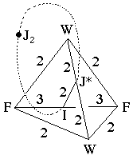
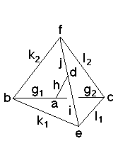

207
207
 209
209Orbifold Atlas Home Page
 Crystallographic Topology Home Page
Crystallographic Topology Home Page
Underlying Topological Space: S3; Figure Pseudo-Symmetry (FPS): 2
Euclidean 3-Orbifold with Invariant-Lattice-Complex Letters
(left), Wyckoff Site Letters (right)
 
| FPS | Mult | Lattice Comp | Group Graph | Wyckoff Set | 2[4]Cover |
| 2-1 | I | 332 | a | ||
| 4-2 | F | 322 | b, c | ||
| 6-1 | J* | 222 | d | ||
| 6-2 | W | 222 | e, f | ||
| 8-2 | I4[-]F2 | 22<3>22 | (g1:b-a, g2:a-c)1 | ||
| 12-1 | I6[-]J*2 | 33<2>22 | (h:a-d)2 | ||
| 12-2 | W2[-]J*2 | 22<2>22 | (i:d-e)3, (j:d-f)4 | ||
| 12-4 | F3[-]W2 | 32<2>22 | l1:c-e, l2:c-f, k1:b-e, k2:b-f | ||
| 24 | 1 | m:ghijkl | |||
| 2 | 24-1 | I12[J2]J*4 | 2*=332<1>222 | (m1:a-d)5 | #211(h) |
| 24-1 | F6[J2]F6 | 2*=332<1>332 | (m2:b-c)6 | [#209(e)] | |
| 24-1 | m* | (m3:hijm1)7 | #223(k) | ||
| 24-1 | m* | (m4:ghm1)8 | #224(k) | ||
| Struct-Mult | Critical Points | Heegaard Surf | Wyckoff Cut | ||
| BCC -1 | I/FF/WW/J* | H2{2222} | k1 k2 h l2 l1 | . |
Lattice Points: (1) -1/4,-1/4,-1/4 + (1/4,1/4,1/4) x2; (2) 0,0,0 + (1/2,1/2,0); (3) 1/2,1/2,0 + (0,-1/4,0); (4) 1/2,1/2,0 + (-1/4,0,0); (5) 0,0,0 + (1/4,1/4,0) x2; (6) 1/4,1/4,1/4, + (0,0,-1/4) x2; (7) 0,y,z; (8) x,x,z
207
209
Orbifold Atlas Home Page
Crystallographic Topology Home Page
Page last revised: